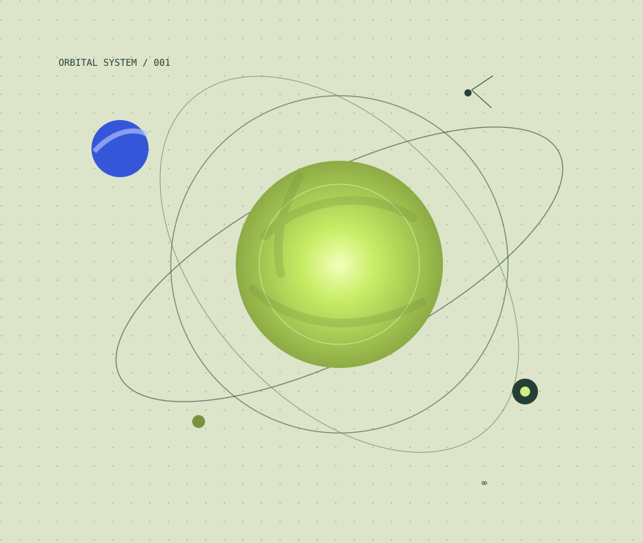
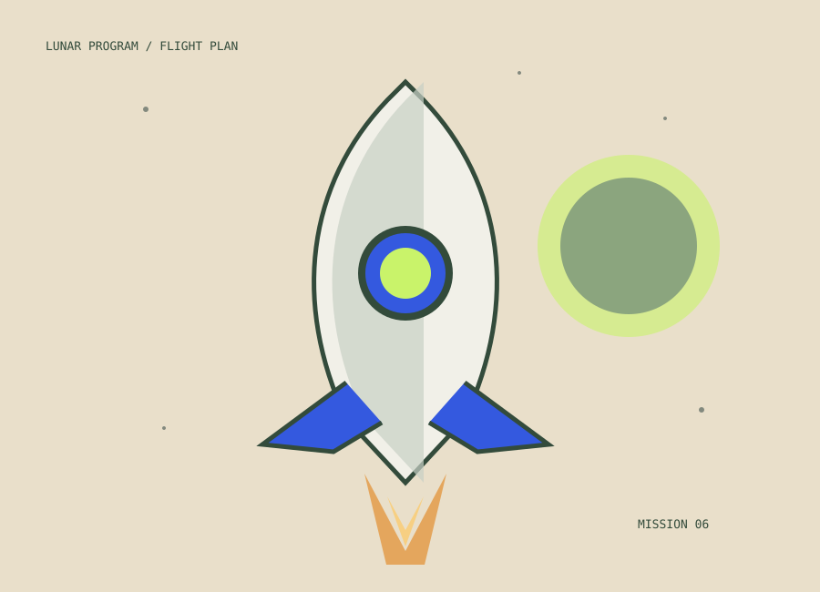

Океаны подо льдом: где искать жизнь за пределами Земли
Почему спутники Юпитера и Сатурна привлекают внимание астробиологов и какие признаки жизни ищут исследователи.
Написать редакции ↗РАЗДЕЛ 03 / ЗА ПРЕДЕЛАМИ ЗЕМЛИ
Космос напоминает, насколько многое нам ещё неизвестно. От соседних планет до далёких галактик — путешествуем через открытия.
DEEP SPACE / 003ЗА ПРЕДЕЛАМИ ЗЕМЛИ
Почему спутники Юпитера и Сатурна привлекают внимание астробиологов и какие признаки жизни ищут исследователи.
Написать редакции ↗
Параллакс, яркость и спектры помогают астрономам строить карту объектов, которые невозможно приблизить.
Написать редакции ↗
Лунные миссии дают возможность проверить технологии для будущих экспедиций и лучше изучить историю Солнечной системы.
Написать редакции ↗